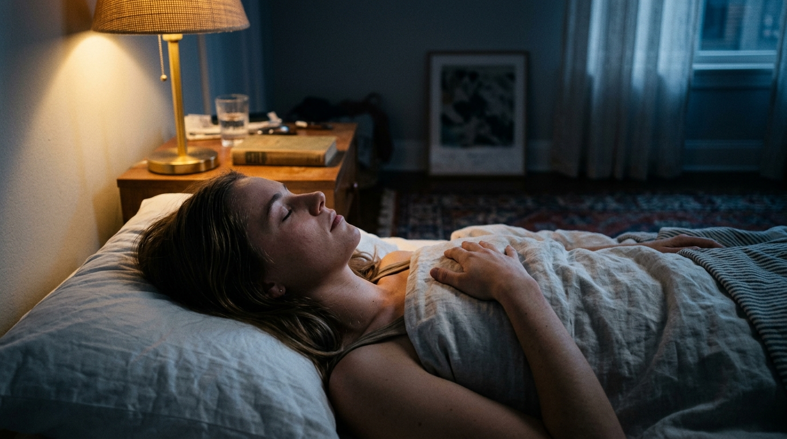
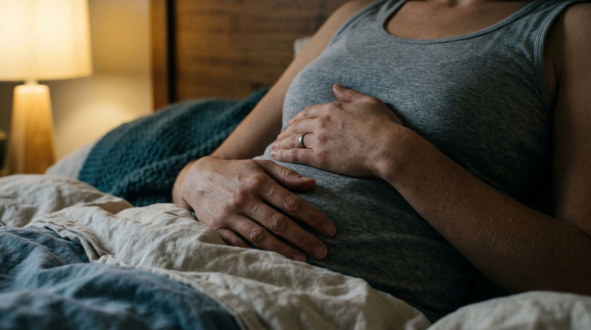

By Dan Brulé, Founder of Breath Mastery
Dan Brulé has practiced and taught breathwork for more than 50 years, training over 300,000 people in 73 countries. His book Just Breathe (Simon & Schuster, foreword by Tony Robbins) remains one of the most widely read guides to practical breathwork.
Key Takeaways
- Nighttime anxiety activates the sympathetic nervous system — which is incompatible with sleep. Per the National Center for Complementary and Integrative Health, breath-based relaxation is among the most evidence-supported non-pharmacological interventions for anxiety-related sleep difficulty.
- The extended exhale (longer out than in) is the fastest entry point. Start here, every time, before attempting more structured techniques.
- 4-7-8 breathing uses breath-holding to slow the nervous system and gives a racing mind something concrete to count: it interrupts the spiral through engagement, not suppression.
- Coherent breathing at approximately 5 breaths per minute produces measurable HRV increases after just 10 minutes of practice, per Zaccaro et al. (2018) in Frontiers in Human Neuroscience. Best for chest tightness and pounding heart.
- You don't need to clear your mind. The physiological shift happens regardless of whether thoughts are still present. Return to the next exhale — always the exhale.
It's midnight. Your body is tired. Your mind is not. Breathing techniques for anxiety at night work differently than anything you'd reach for during the day — and that difference is exactly why they work.
The thoughts come in loops. Something you said three days ago. Something you haven't done yet. Something that might happen, probably won't, but feels inevitable at 1 a.m.
What actually happens in your body when anxiety takes hold at 2 a.m. and refuses to release? Your chest tightens. Your breath shortens. You check the time, calculating how many hours of sleep you'd still get if you fell asleep right now, and the calculation itself makes things worse.
This is the nighttime anxiety spiral. The breathing techniques for anxiety at night described in this guide interrupt it — not by suppressing your thoughts, but by changing the physiological state feeding them. Breath-based relaxation is among the most evidence-supported non-pharmacological interventions for anxiety-related sleep difficulty.
In 50 years of teaching these practices to more than 300,000 people across 73 countries, Dan Brulé has found one consistent pattern: the people who sleep better aren't usually the ones who learn to think differently at night. They're the ones who learn to breathe differently.
Why Nighttime Anxiety Hits Differently Than Daytime Stress
Stress during the day has outlets. You move, you act, you talk, you solve. At night, none of those are available — which is exactly why breathing techniques for anxiety at night matter as a standalone approach. As a result, the nervous system stays activated with nowhere to discharge the energy. Research consistently links anxiety disorders with sleep disturbance, and the Cleveland Clinic identifies anxiety as one of the most common causes of sleep disorders, precisely because the systems that produce worry and the systems that produce sleep are mutually antagonistic.
Anxiety activates the sympathetic nervous system: the branch that evolved to respond to danger. Heart rate rises. Cortisol releases. The body genuinely believes something requires urgent attention. This is the wrong state for sleep. Sleep requires the parasympathetic branch: rest, restoration, the long slow exhale.
Breathing is the most direct switch between these two states, and breathing techniques for anxiety at night leverage that directly. When your options are limited, the breath is often the only switch available.
Before You Start: The One Thing Anxious Breathers Get Wrong
The instinct when anxious is to take a big breath in, seeking "control" over the situation. This almost always makes things worse. A forced inhale signals urgency to the nervous system. The body reads the effort as confirmation that something is happening, and ramps its response up rather than down.
All effective breathing techniques for anxiety at night share a common starting point: soften the inhale before doing anything else. Make it quieter, smaller, gentler. Then work from there. The NHS recommends this same principle: relaxed pacing produces calm; effort does not.
There's a second misconception worth addressing before you begin. Most people expect breathing exercises to immediately quiet the mind. When the thoughts don't stop, they assume the technique has failed and give up. However, the physiological shift that breathing techniques for anxiety at night produce (slower heart rate, lowered cortisol, activated vagus nerve) happens in the body regardless of whether the mind has quieted. In practice, students consistently report that the thoughts lose urgency over time, not in an instant. The technique is working even when you can't feel it yet.
For example, a gentle six-second exhale does more for your nervous system than a forceful deep inhale. Don't use effort on the inhale. Calm arrives through relaxed pacing.
The 4 Breathing Techniques for Anxiety at Night
These four breathing techniques for anxiety at night are listed in order of complexity. Start with the first. Move to the others only if needed. The chart below maps all four against speed of effect and technique complexity, so you can choose based on how activated you are when you reach for help.
| Technique | Duration | Difficulty | Best For | Physiological Action |
|---|---|---|---|---|
| Soft Exhale | 2–3 min | Simple | Any anxiety level; first response | Vagus nerve activation via 2:1 exhale ratio |
| 4-7-8 Breathing | 2–4 min | Moderate | Racing thoughts, looping mind | Breath hold deepens parasympathetic response |
| Coherent Breathing | 10 min | Simple | Chest tightness, pounding heart | HRV optimization; synchronizes cardiorespiratory rhythms |
| Body Scan Breathing | 10–15 min | Moderate | Physical tension alongside mental anxiety | Progressive somatic release tied to each exhale |
Technique 1: The Soft Exhale (Start Here)
Among all breathing techniques for anxiety at night, the Soft Exhale is the most direct entry into a calmer nervous system. It requires nothing except a willingness to let your exhale run longer than your inhale. Research consistently shows that extending the exhale beyond the inhale at a ratio of roughly 2:1 activates the vagus nerve and shifts the autonomic nervous system toward parasympathetic dominance. No timer required. No silence required.
- Lie on your back. Place one hand on your belly, one on your chest.
- Inhale slowly through your nose. Let the breath come in naturally without forcing it.
- Exhale slowly through your mouth, as if fogging a mirror. Let the exhale be soft and long, lasting about twice as long as the inhale.
- Repeat six to eight cycles.
The only goal is that extended exhale. If it points toward strain at any point, downshift: softer inhale, longer exhale, slower pace. This technique either works within six cycles or it doesn't work alone. If nothing shifts, move to Technique 2.
Technique 2: 4-7-8 Breathing
When the mind is looping and the Soft Exhale isn't sufficient, 4-7-8 offers another effective breathing technique for anxiety at night — it gives the analytical brain something concrete to count. The counting structure is deliberate: it occupies the part of the mind that generates the spiral while the breath simultaneously shifts the physiology underneath it. This technique derives from Pranayama traditions and was adapted for sleep by integrative physician Dr. Andrew Weil.
- Inhale through the nose for a count of 4.
- Hold the breath for a count of 7.
- Exhale through the mouth for a count of 8.
- Repeat for four cycles total.
The ratio matters more than the specific numbers. If holding for 7 counts feels uncomfortable, use 4-6-7 or 3-5-6. The extended hold is what deepens the parasympathetic response: it sends the body a clear signal that no immediate threat is present.
Note: Breath holding is not appropriate for everyone. If you have high blood pressure, cardiovascular conditions, or a history of panic attacks where breath holding worsens symptoms, skip this technique and use the Soft Exhale or Coherent Breathing instead.
Technique 3: Coherent Breathing for Sleep
Coherent breathing at approximately five cycles per minute synchronizes the cardiovascular and respiratory systems, producing measurable increases in heart rate variability (HRV). Research by Zaccaro et al. (2018) in Frontiers in Human Neuroscience found that slow-paced breathing at around five cycles per minute significantly increases HRV and reduces self-reported anxiety, with effects measurable after ten minutes of practice. Among breathing techniques for anxiety at night, Coherent Breathing is therefore the most effective when anxiety has a physical quality: chest tightness, shallow breath, heart pounding.
- Inhale for five to six seconds through the nose.
- Exhale for five to six seconds through the nose.
- No pauses, no effort: a smooth, continuous rhythm.
- Continue for ten minutes.
In practice, students who apply this technique consistently before sleep report that within one to two weeks the response becomes automatic. The nervous system learns the rhythm and begins to associate that breath cadence with sleep onset. For a shorter daytime version of this same technique, see Breathing Exercises for Stress: A 5-Minute Reset.
Technique 4: Body Scan Breathing
When anxiety is rooted in physical tension, adding a body scan deepens the release that Coherent Breathing begins. Nighttime anxiety almost always has a somatic component: the jaw, the chest, the hips hold arousal that the mind keeps generating. The Body Scan gives each exhale a specific target rather than asking the body to release tension in general.
Start at the top of the head and work down. As you exhale each breath, consciously soften one area:
- Exhale: relax the jaw. Let the tongue rest softly on the roof of the mouth.
- Exhale: soften the shoulders. Let them drop away from the ears.
- Exhale: release the chest. Let it spread wide rather than holding inward.
- Exhale: soften the belly. No effort, no bracing.
- Exhale: release the hips and legs. Let the floor take their weight.
By the time you reach the feet, breathing has typically slowed on its own and the body has released at least some of the tension it was carrying. This technique works well after Coherent Breathing, not instead of it.
Breathing Techniques for Anxiety at Night: What to Do When Thoughts Intrude
The mind at night is persistent. You start one of these breathing techniques for anxiety at night and a thought arrives. You follow the thought. Three minutes later, you realize you've stopped breathing deliberately. This is not failure. This is what minds do.
The response is simple: when you notice you've drifted, return to the next exhale. Not the next inhale — the next exhale. The exhale is where the physiological shift happens, and therefore that's where your attention belongs.
You don't need to clear your mind to benefit from these techniques. The physiological changes happen in the body regardless of whether thoughts are still present. However, what does change over time with consistent practice is that the thoughts lose urgency. They're still there, but they feel less like emergencies. This is the nervous system learning that exhaling means safety.

The Role of Nasal Breathing at Night
One specific detail that makes a measurable difference at night: breathing through the nose rather than the mouth. Nasal breathing produces nitric oxide, which improves oxygen uptake and acts as a mild vasodilator. It also maintains CO2 levels in the bloodstream, which are important for blood vessel dilation and oxygen delivery to the brain. Mouth breathing during anxiety tends to be faster and less regulated, which actively undermines the calming effect of breathing techniques for anxiety at night — feeding the same over-arousal pattern you're trying to interrupt.
When in doubt, nose in, nose out. The full science behind why nasal breathing matters and why CO2 plays a central role is covered in The Science of Breathing: CO2, Calm, and Why Slow Breathing Works So Fast.

Frequently Asked Questions
Why does anxiety get worse at night specifically?
During the day, the prefrontal cortex (the thinking, evaluating part of the brain) remains active and largely keeps the amygdala's threat-detection in check. At night, sleep pressure and lower stimulation reduce prefrontal activity, giving the amygdala more room. Thoughts that felt manageable during the day can feel urgent or catastrophic at 1 a.m. Breathing works here because it acts directly on the physiological state without requiring the prefrontal cortex at all. This is why techniques that would seem "too simple" during the day can be genuinely effective at night.
Can breathing techniques for anxiety at night feel strange or increase anxiety at first?
Yes, for some people. If you're not accustomed to paying attention to your breath, the increased awareness can initially feel odd or even anxiety-provoking. This is common and temporary. If a particular technique increases discomfort, stop and return to normal breathing. Start with just a few cycles rather than a full ten minutes, and build gradually over several nights until the practice feels familiar and safe. The Soft Exhale is generally the gentlest starting point for people who are sensitive to breath-focused attention.
Can I use breathing techniques for anxiety at night if I wake up at 3 a.m.?
Yes. The Soft Exhale and Coherent Breathing are both well-suited to middle-of-the-night awakening. Start with just three to four slow exhales before attempting anything more structured. If you're fully awake with racing thoughts, sit up briefly for the 4-7-8 technique for four cycles, then return to lying down for Coherent Breathing as you settle. The goal is to work through the sequence progressively, not jump straight to the most structured technique, which can feel effortful when you're already activated.
How Long Before Breathing Techniques for Anxiety at Night Become Reliable?
Some people feel a shift the first time they try. Others need a week of consistent practice before the response becomes reliable. The nervous system learns: the more consistently you use breathing to regulate at night, the faster and more automatic the response becomes. Five to ten minutes before sleep, practiced daily, typically produces measurable improvement in sleep quality within one to two weeks. Peer-reviewed studies document that breathing techniques for anxiety at night produce significant physiological changes after even a single ten-minute slow-breathing session.
Which breathing technique works best when you wake up at 3 a.m.?
Start with the Soft Exhale: three to four slow breaths, exhaling twice as long as you inhale. If you're fully awake with racing thoughts, sit up briefly and try 4-7-8 for four cycles. Then return to lying down with Coherent Breathing at five breaths per minute until you feel settled enough to sleep. The key is progression through the sequence rather than jumping to the most complex technique first. In practice, most people find the Soft Exhale alone is sufficient once the practice becomes consistent.
The breathing techniques in this post are gentle and generally safe. The 4-7-8 technique involves breath holding and is not suitable for people with cardiovascular conditions, high blood pressure, a history of panic attacks where breath holding worsens symptoms, or during pregnancy. If you have a health condition, consult a qualified healthcare provider before beginning any new breathing practice. Breathwork is not a substitute for professional medical or mental health care.
If you want to make these breathing techniques for anxiety at night automatic rather than emergency-only, Mastering the Breath ($97) gives you a structured daily practice built on the same principles — short sessions that train the nervous system response you need before the spiral starts. Over 10,000 people have used it to build exactly that kind of reliable practice. If you're earlier in the process and want to explore first, Breath & Beyond ($97) is a focused entry point into Dan's core framework.
Further reading: